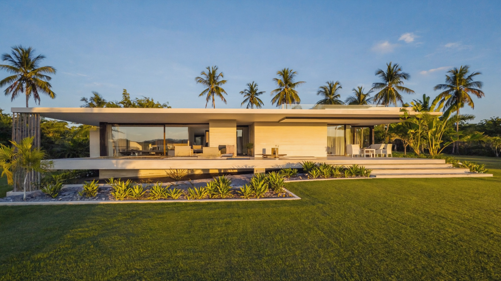

Yiri Services vous accompagne dans la recherche et l'acquisition de terrain à vendre Korhogo. Nous mettons en relation vendeurs et acheteurs, et nous vous aidons à sécuriser chaque étape de votre projet immobilier.
4 étapes pour acquérir votre terrain en toute confiance.
Surface, budget, localisation : nous échangeons sur vos critères pour cibler les meilleures options.
Nous vous présentons les terrains disponibles correspondant à vos critères.
Visites sur le terrain et vérification des documents pour sécuriser la transaction.
Accompagnement dans les démarches administratives et la formalisation de la vente.
Nous proposons des terrains à Korhogo (Nouveau Quartier, quartiers en extension) ainsi que dans les villages et localités environnantes, selon la disponibilité du moment. Notre objectif est de réduire les risques et de vous aider à acquérir un terrain à vendre Korhogo en toute confiance.

Pour une consultation immobilière ou pour connaître nos offres de terrain à vendre Korhogo, contactez Yiri Services au +225 07 09 43 62 74.
Nous Contacter